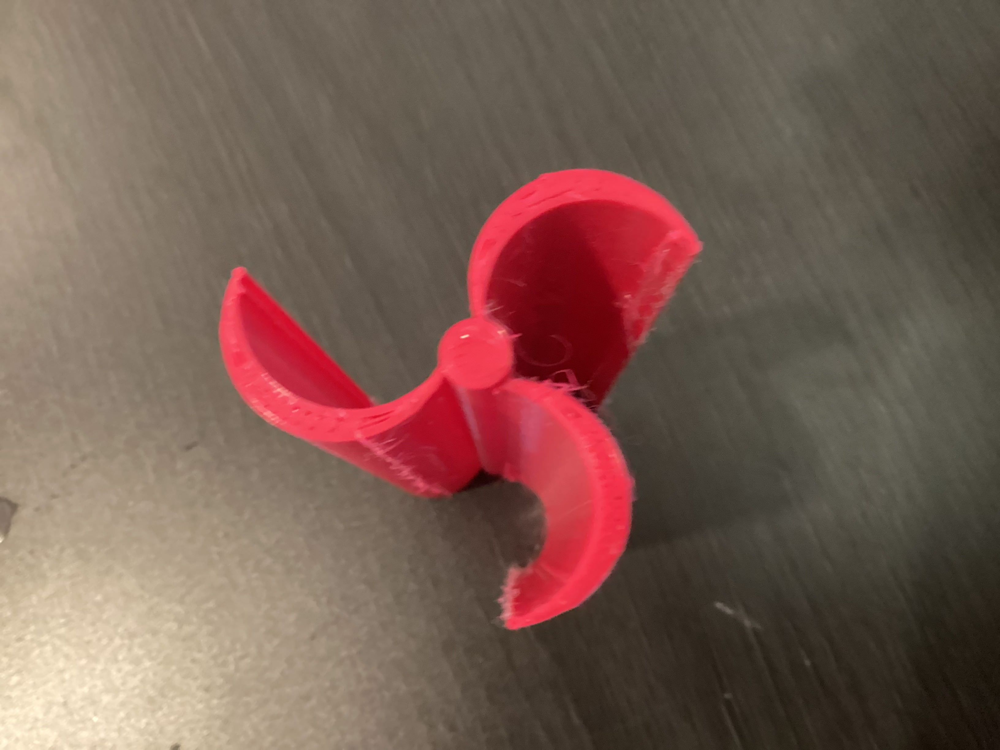
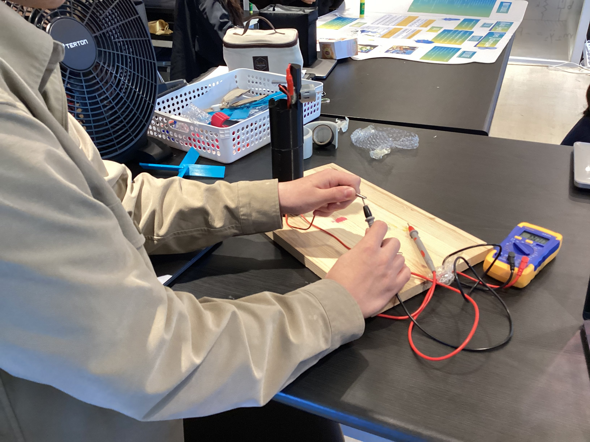
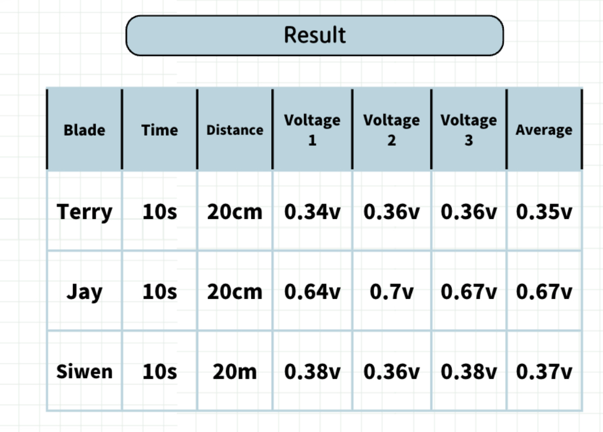

STEM Fair
The Efficiency of Wind Turbine Blade Designs
We are 3-D printing different shapes of wind turbine and then compare the turbines to see which shape of turbine produce the most energy.
Ask:
how can the project create energy in our daily life?
Imagine:
Create a kind windmill that can produce more energy than the original types of the windmill.
Plan
3-D print the windmill and compare the windmill with other windmill, record the energy each windmill produce.
Create:
I used a website called Tinker-cad to design our wind turbine, I repeated designing again and again and finally got the best size, then I used the 3-D printer to print my design and got the final turbine.


Experiment

After finishing our designs, we used a huge fan that can produce strong wind to test how many energy our project can produce, the multimeter showed the result and we recoreded the results from each tests, as you can see.
Improvement
We would need our wind turbine's size to be similar so the result it more scientific.